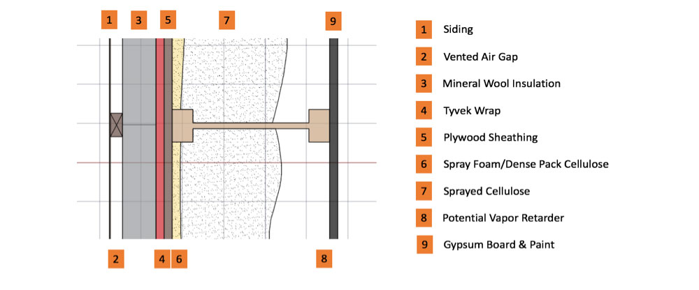
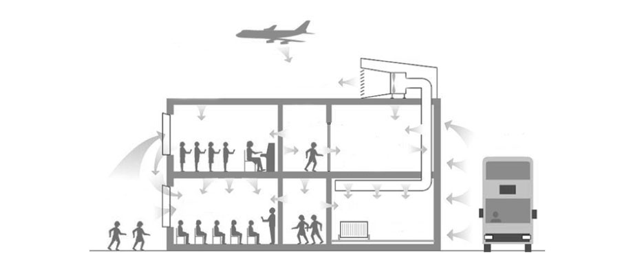

The building envelope is one of the most important features of an energy efficient and comfortable home. It is the skin of the building which controls the passage of heat, air, moisture, and sound from the interior to the great outdoors. In a cold climate such as Toronto's, it is especially important that these control layers be effective. In typical Canadian residential homes, space heating accounts for 63% of the annual energy consumption. With more efficient building envelopes, this number can be greatly decreased.
We are designing a house which is not only extremely energy efficient, but also comfortable. This means being able to get out of the shower in the winter and have the bathroom still be warm, and not have rivers of water running down the walls and windows due to cold surface temperatures. To be able to sit by the window and not feel the cold radiating from it. To not have cold, unwanted drafts drifting through the house. In the summer, not having an imbalanced cool body temperature from the air conditioning system while the sun streams in the window. The ECOstudio home will be comfortable at all times of year, no matter where you are in the house.
There are many components to high performing building envelope which need to work together as a coherent system. In order for the wall to keep the inside environment inside, and the outside environment outside, five general control layers are required. These are thermal, air, moisture, sound, and bulk water.
Since our design prioritizes our certain objectives, we have chosen to go with a TJI wall system contingent on structural capacity with double stud walls as a second option. Despite suffering from more thermal bridging, TJI's still offer benefits that are within our desired objectives. Therefore, a tradeoff of ~3% in plan view thermal bridging performance has to be done to allow for our other objectives, which include durability, repairability, simplicity of design, and the ability to individually choose materials that would benefit other parameters such as air quality.
Using TJI's, our preliminary wall assembly would be as seen above. Our preliminary walls aims to provide at least 6 RSI, while also allows for drying by having a higher permeance. Additionally, exterior insulation would help control thermal bridging, while also promoting envelope durability by serving as bulk water control. The control layers for this assembly are discussed below.
The quality of a building is often evaluated according to its energy efficiency, which can overshadow other aspects that influence indoor comfort, such as acoustic performance.
The standards that are enforced today do not meet all requirements necessary to achieve healthy acoustical levels. It is known that unhealthy environments can reduce productivity and communication while increasing stress levels of occupants. For this reason, a holistic acoustical design approach should be considered to ensure superior living comfort.
A comfortable acoustic design can be achieved primarily by reducing sound transmission between different environments. Unwanted sound from the exterior and adjacent spaces can create distracting and otherwise uncomfortable building situations. Material selection and reduced 'acoustical bridging' through innovative solutions will help in achieve an optimal occupant experience.
For the Canadian population, the average life expectancy is 81 years. Roughly 72 years out of those are spent indoors. That means that the average Canadian spends 90% of their time indoors. It has been known that many pollutants increase risks for diseases and even reduce living years. In one study, it was shown that increasing PM10 by 10 μg/m3 increased death by 0.51%. And yet, it isn’t common practice to consider indoor air quality when a home is built. Indoor air quality testing is expensive and so it is important to try to get air quality right from the start. Indoor air quality is one of the many important aspects to create a healthy home and that starts by creating designs that mitigate harmful pollutant.
We are looking to design a house that apart from performing well, it also provides a safe, healthy space for its occupants. To provide this, we will be looking at indoor air quality and different methods of mitigation whether it is source control, ventilation, or air cleaning. We are looking to at least meet Health Canada’s recommended concentration guidelines. The main pollutants we will be looking to mitigate are harmful VOCs and formaldehyde that are likely to be emitted due new construction materials, ozone, which is likely to be higher in Toronto, and PM2.5. While not all pollutants are equally important, we will be paying close attention to those three pollutants to provide a healthier home for the occupants.
Due to our house being newly constructed, we are going to be looking at mitigation measures that include passive air cleaning by using materials that promote deposition, active air filtering via our ventilation system, source control especially when it comes to material selection, and fresh air ventilation.
Since we are still in a very preliminary phase regarding the house design, our house’s air quality conditions are yet to be defined. As more conditions are defined, different models can be used to determine air quality at any given time. One of the methods is to create a mass balance to determine the house’s pollutant concentration at equilibrium. This can be derived from the equation shown below:
By quantifying the different sources and losses, we can have a better idea of the estimated indoor air performance. And depending on whether we have to lower concentrations of a certain pollutant, solutions can be proposed as to whether a material should or shouldn’t be used.
In general, introducing daylight into the built environment can promote health and comfort of the occupants.
By providing sufficient illumination levels from natural light, a building can also reduce the energy demand of electrical lighting. Good lighting design achieves a good balance between style, aesthetics, occupant’s comfort, practicality, and energy consumption.
To achieve an effective lighting design, the following strategies are implemented:
Thermal mass plays an important role in energy conservation and providing thermal comfort in buildings.
With the use of non-conventional energy storage and thermal mass materials, our design will increase the thermal stability of the home, which will reduce energy demands and increase occupant comfort.
Our design will implement phase change materials (PCM), which are a prominent example of latent heat storage systems that entail increased comfort levels and reduced energy consumption. Latent heat storage occurs when materials undergo phase transitions like solid-liquid, in which the materials absorb heat and melt at specific melting temperatures and later release the absorbed heat to the environment.
In summer PCMs store excess heat caused by solar and internal gains and release the heat at night when temperatures are likely to drop which could even be enhanced by night time cooling. In winter these materials could also prove to be beneficial in case of excessive heat gain in the building, and lead to less heating demands at night when the heat is released back to the spaces. Compared to traditional sensible thermal storage materials like masonry, PCMs are lightweight and have 5-14 times more storage capacity per unit volume.